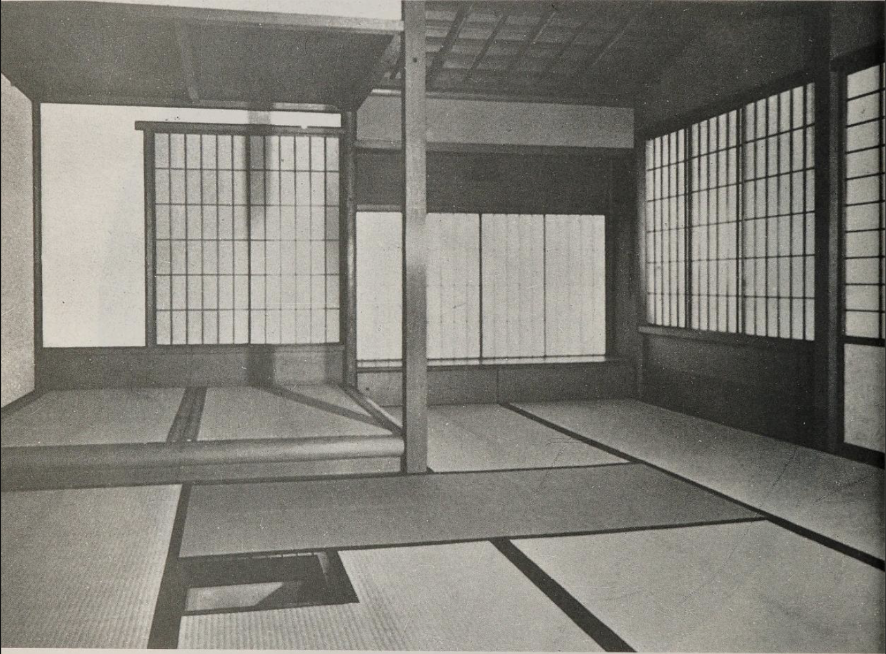
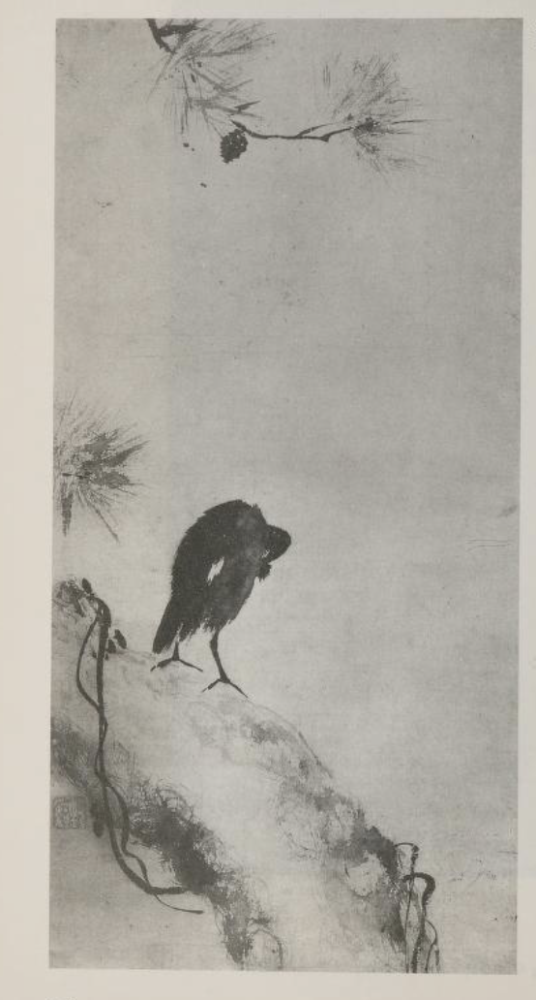

Aesthetic ZEN
beauty, practice, and leaving enough alone

beauty
Beauty is not a separate thing added after practice. It is one way practice becomes visible.
When a room is quiet enough, when a sentence is not trying too hard, when a flower is allowed to lean in its own direction, something in us can settle. Not because the thing has been made perfect, but because enough has been left alone.
This matters for Zen. The way we arrange a place, choose an object, open a door, or leave a gap can invite us back to the ordinary world with more care. Aesthetic practice is not about making life look Japanese. It is about noticing what helps life become clear.
aesthetic zen
The following seven aspects are often used to describe Japanese and Zen-related aesthetics. They are not rules. They are ways of seeing what gives a thing life.
Fukinsei (不均斉) asymmetry, irregularity
Life is not perfectly even. A hand-drawn circle, a slightly off-centre flower, an uneven stone path, or a pause in conversation can feel more alive than perfect symmetry. In meditation, irregularity is not a problem to fix. Thoughts wander, feelings rise and fall, the body shifts, and practice includes all of this.
Kanso (簡素) simplicity
Simplicity is not emptiness for its own sake. It is the removal of what is unnecessary so the essential can be felt. In design, this may mean fewer words, fewer colours, more space, and no decoration that does not serve the whole. In practice, it is close to just sitting: body, breath, mind, and the room, with nothing extra required.
Koko (考古) basic, weathered
Koko points toward what is austere, basic, seasoned, and worn by time. A much-used cushion, an old timber floor, a plain bowl, or a stone shaped by weather can carry this quality. In design, it suggests honest materials and a respect for age. In practice, it means returning to what is fundamental.
Shizen (自然) naturalness, without pretence
Shizen is naturalness without artificiality. It does not mean careless or accidental. A good garden, room, or page may be carefully made, yet still feel unforced. In Zen practice, this is the feeling of letting meditation be meditation, rather than performing an idea of calmness.
Yūgen (幽玄) subtle, profound grace
Yūgen is the beauty of what is suggested but not fully explained. It is depth without display. A shadow, a half-seen moon, a few words, or a simple bow may say more by not saying everything. In design, yūgen encourages restraint. In practice, it reminds us that the deepest things are not always available as clear ideas.
Datsuzoku (脱俗) freedom from convention
Datsuzoku is a release from the usual pattern. It is not rebellion for show, but freshness. A page may breathe because it does not follow every design habit. A life may open because we pause before repeating the same old story about ourselves. Practice gives us a little room to step outside habit.
Seijaku (静寂) tranquillity, silence
Seijaku is quietness, but not dead quietness. It is living stillness. A room can hold it. A garden can hold it. A person sitting upright and relaxed can hold it. In design, it appears as calm rhythm, adequate space, and nothing shouting for attention.
fine art
Zen and the Fine Arts is by Shin'ichi Hisamatsu, translated into English by Gishin Tokiwa, and published by Kodansha International. The 1982 edition is a 400-page illustrated translation of Zen to Bijutsu, a study of Zen in relation to painting, calligraphy, tea, gardens, ceramics, architecture, theatre, and other arts.
Hisamatsu is not only interested in art that has a Zen subject. He is interested in the form of Zen: the spare mark, the old surface, the open interval, the room that does not need to explain itself. The two images on this page come from that book.

design
Here is a simple way to bring these aesthetics into a room, a website, a garden, or a daily ritual.
- Begin with one clear intention.
- Remove one thing that does not need to be there.
- Give the important thing more space.
- Allow one irregular, human element to remain.
- Use natural, durable, or honest materials where you can.
- Let the design suggest more than it explains.
- Stop before it becomes clever.
Then sit with it quietly. Notice whether the space invites friendliness, steadiness, and ease.
Further
The seven terms above are adapted from the list of Zen aesthetic principles on Japanese aesthetics. For broader background, see the Stanford Encyclopedia of Philosophy entry on Japanese aesthetics, the design reflections at Presentation Zen, and Shin'ichi Hisamatsu's Zen and the Fine Arts.